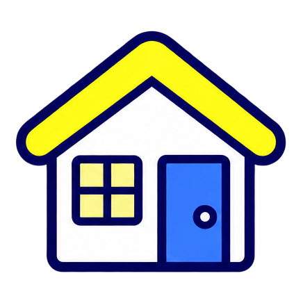
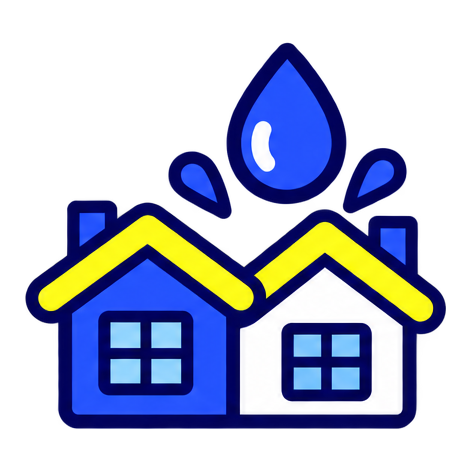

Aluguel em jogo
→ Plano Total
Aluguel pago ou recebido indica a necessidade de proteção para perda de aluguel.
Time Varetas
Proteção personalizada começa com uma recomendação que a pessoa consegue compreender.
Varetas · Datathon Proteção Inteligente
01 / 05Como funciona
One Click Buy pré-preenchido: pergunta só o que falta e chama o gerente só na exceção.
O banco já tem IPTU, luz, compras e aluguel: 2,75 perguntas em vez de ~20 campos.
Sinal fraco vira pergunta. A recomendação só segue quando o caso é elegível.
Fato do cliente, necessidade atendida, valor em jogo e confiança explicada.
Fluxo: guia oficial do datathon · regra do motor documentada
02 / 05A recomendação
Escolhemos o plano mais enxuto que atende às necessidades comprovadas.

Aluguel pago ou recebido indica a necessidade de proteção para perda de aluguel.
Compras, bens vinculados ou gasto com vidraçaria podem sustentar essa necessidade.

Prédios, condomínios, dependentes ou pet podem indicar RC como adicional.
Limiares de bens são medianas da base de desenvolvimento; não são limites atuariais
03 / 05Dados e confiança
Móveis, eletrodomésticos e eletrônicos identificados nas transações.
IPCA traz compras a valores atuais; a faixa deixa a incerteza visível.
As fontes ficam salvas no projeto, com data e licença; a API só atualiza.
Fontes: README.md · motor/parametros.py · entrega/assertividade.json
04 / 05Evidência e evolução
O que medimos é a qualidade de estimativas com gabarito. A base não permite medir a acurácia do plano ou o valor real dos bens.
Fontes: entrega/metricas.json · entrega/assertividade.json · base comum de teste
05 / 05